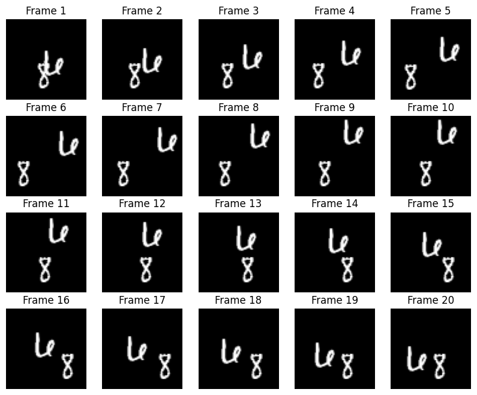
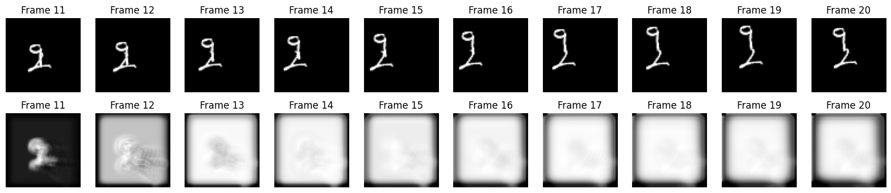

Next-Frame Video Prediction with Convolutional LSTMs
Author: Amogh Joshi
Date created: 2021/06/02
Last modified: 2023/11/10
Description: How to build and train a convolutional LSTM model for next-frame video prediction.

Introduction
The Convolutional LSTM architectures bring together time series processing and computer vision by introducing a convolutional recurrent cell in a LSTM layer. In this example, we will explore the Convolutional LSTM model in an application to next-frame prediction, the process of predicting what video frames come next given a series of past frames.
Setup
import numpy as np
import matplotlib.pyplot as plt
import keras
from keras import layers
import io
import imageio
from IPython.display import Image, display
from ipywidgets import widgets, Layout, HBox
Dataset Construction
For this example, we will be using the Moving MNIST dataset.
We will download the dataset and then construct and preprocess training and validation sets.
For next-frame prediction, our model will be using a previous frame,
which we'll call f_n, to predict a new frame, called f_(n + 1).
To allow the model to create these predictions, we'll need to process
the data such that we have "shifted" inputs and outputs, where the
input data is frame x_n, being used to predict frame y_(n + 1).
# Download and load the dataset.
fpath = keras.utils.get_file(
"moving_mnist.npy",
"http://www.cs.toronto.edu/~nitish/unsupervised_video/mnist_test_seq.npy",
)
dataset = np.load(fpath)
# Swap the axes representing the number of frames and number of data samples.
dataset = np.swapaxes(dataset, 0, 1)
# We'll pick out 1000 of the 10000 total examples and use those.
dataset = dataset[:1000, ...]
# Add a channel dimension since the images are grayscale.
dataset = np.expand_dims(dataset, axis=-1)
# Split into train and validation sets using indexing to optimize memory.
indexes = np.arange(dataset.shape[0])
np.random.shuffle(indexes)
train_index = indexes[: int(0.9 * dataset.shape[0])]
val_index = indexes[int(0.9 * dataset.shape[0]) :]
train_dataset = dataset[train_index]
val_dataset = dataset[val_index]
# Normalize the data to the 0-1 range.
train_dataset = train_dataset / 255
val_dataset = val_dataset / 255
# We'll define a helper function to shift the frames, where
# `x` is frames 0 to n - 1, and `y` is frames 1 to n.
def create_shifted_frames(data):
x = data[:, 0 : data.shape[1] - 1, :, :]
y = data[:, 1 : data.shape[1], :, :]
return x, y
# Apply the processing function to the datasets.
x_train, y_train = create_shifted_frames(train_dataset)
x_val, y_val = create_shifted_frames(val_dataset)
# Inspect the dataset.
print("Training Dataset Shapes: " + str(x_train.shape) + ", " + str(y_train.shape))
print("Validation Dataset Shapes: " + str(x_val.shape) + ", " + str(y_val.shape))
Downloading data from http://www.cs.toronto.edu/~nitish/unsupervised_video/mnist_test_seq.npy
819200096/819200096 ━━━━━━━━━━━━━━━━━━━━ 116s 0us/step
Training Dataset Shapes: (900, 19, 64, 64, 1), (900, 19, 64, 64, 1)
Validation Dataset Shapes: (100, 19, 64, 64, 1), (100, 19, 64, 64, 1)
Data Visualization
Our data consists of sequences of frames, each of which are used to predict the upcoming frame. Let's take a look at some of these sequential frames.
# Construct a figure on which we will visualize the images.
fig, axes = plt.subplots(4, 5, figsize=(10, 8))
# Plot each of the sequential images for one random data example.
data_choice = np.random.choice(range(len(train_dataset)), size=1)[0]
for idx, ax in enumerate(axes.flat):
ax.imshow(np.squeeze(train_dataset[data_choice][idx]), cmap="gray")
ax.set_title(f"Frame {idx + 1}")
ax.axis("off")
# Print information and display the figure.
print(f"Displaying frames for example {data_choice}.")
plt.show()
Displaying frames for example 95.

Model Construction
To build a Convolutional LSTM model, we will use the
ConvLSTM2D layer, which will accept inputs of shape
(batch_size, num_frames, width, height, channels), and return
a prediction movie of the same shape.
# Construct the input layer with no definite frame size.
inp = layers.Input(shape=(None, *x_train.shape[2:]))
# We will construct 3 `ConvLSTM2D` layers with batch normalization,
# followed by a `Conv3D` layer for the spatiotemporal outputs.
x = layers.ConvLSTM2D(
filters=64,
kernel_size=(5, 5),
padding="same",
return_sequences=True,
activation="relu",
)(inp)
x = layers.BatchNormalization()(x)
x = layers.ConvLSTM2D(
filters=64,
kernel_size=(3, 3),
padding="same",
return_sequences=True,
activation="relu",
)(x)
x = layers.BatchNormalization()(x)
x = layers.ConvLSTM2D(
filters=64,
kernel_size=(1, 1),
padding="same",
return_sequences=True,
activation="relu",
)(x)
x = layers.Conv3D(
filters=1, kernel_size=(3, 3, 3), activation="sigmoid", padding="same"
)(x)
# Next, we will build the complete model and compile it.
model = keras.models.Model(inp, x)
model.compile(
loss=keras.losses.binary_crossentropy,
optimizer=keras.optimizers.Adam(),
)
Model Training
With our model and data constructed, we can now train the model.
# Define some callbacks to improve training.
early_stopping = keras.callbacks.EarlyStopping(monitor="val_loss", patience=10)
reduce_lr = keras.callbacks.ReduceLROnPlateau(monitor="val_loss", patience=5)
# Define modifiable training hyperparameters.
epochs = 20
batch_size = 5
# Fit the model to the training data.
model.fit(
x_train,
y_train,
batch_size=batch_size,
epochs=epochs,
validation_data=(x_val, y_val),
callbacks=[early_stopping, reduce_lr],
)
Epoch 1/20
180/180 ━━━━━━━━━━━━━━━━━━━━ 50s 226ms/step - loss: 0.1510 - val_loss: 0.2966 - learning_rate: 0.0010
Epoch 2/20
180/180 ━━━━━━━━━━━━━━━━━━━━ 40s 219ms/step - loss: 0.0287 - val_loss: 0.1766 - learning_rate: 0.0010
Epoch 3/20
180/180 ━━━━━━━━━━━━━━━━━━━━ 40s 219ms/step - loss: 0.0269 - val_loss: 0.0661 - learning_rate: 0.0010
Epoch 4/20
180/180 ━━━━━━━━━━━━━━━━━━━━ 40s 219ms/step - loss: 0.0264 - val_loss: 0.0279 - learning_rate: 0.0010
Epoch 5/20
180/180 ━━━━━━━━━━━━━━━━━━━━ 40s 219ms/step - loss: 0.0258 - val_loss: 0.0254 - learning_rate: 0.0010
Epoch 6/20
180/180 ━━━━━━━━━━━━━━━━━━━━ 40s 219ms/step - loss: 0.0256 - val_loss: 0.0253 - learning_rate: 0.0010
Epoch 7/20
180/180 ━━━━━━━━━━━━━━━━━━━━ 40s 219ms/step - loss: 0.0251 - val_loss: 0.0248 - learning_rate: 0.0010
Epoch 8/20
180/180 ━━━━━━━━━━━━━━━━━━━━ 40s 219ms/step - loss: 0.0251 - val_loss: 0.0251 - learning_rate: 0.0010
Epoch 9/20
180/180 ━━━━━━━━━━━━━━━━━━━━ 40s 219ms/step - loss: 0.0247 - val_loss: 0.0243 - learning_rate: 0.0010
Epoch 10/20
180/180 ━━━━━━━━━━━━━━━━━━━━ 40s 219ms/step - loss: 0.0246 - val_loss: 0.0246 - learning_rate: 0.0010
Epoch 11/20
180/180 ━━━━━━━━━━━━━━━━━━━━ 40s 219ms/step - loss: 0.0245 - val_loss: 0.0247 - learning_rate: 0.0010
Epoch 12/20
180/180 ━━━━━━━━━━━━━━━━━━━━ 40s 219ms/step - loss: 0.0241 - val_loss: 0.0243 - learning_rate: 0.0010
Epoch 13/20
180/180 ━━━━━━━━━━━━━━━━━━━━ 40s 219ms/step - loss: 0.0244 - val_loss: 0.0245 - learning_rate: 0.0010
Epoch 14/20
180/180 ━━━━━━━━━━━━━━━━━━━━ 40s 219ms/step - loss: 0.0241 - val_loss: 0.0241 - learning_rate: 0.0010
Epoch 15/20
180/180 ━━━━━━━━━━━━━━━━━━━━ 40s 219ms/step - loss: 0.0243 - val_loss: 0.0241 - learning_rate: 0.0010
Epoch 16/20
180/180 ━━━━━━━━━━━━━━━━━━━━ 40s 219ms/step - loss: 0.0242 - val_loss: 0.0242 - learning_rate: 0.0010
Epoch 17/20
180/180 ━━━━━━━━━━━━━━━━━━━━ 40s 219ms/step - loss: 0.0240 - val_loss: 0.0240 - learning_rate: 0.0010
Epoch 18/20
180/180 ━━━━━━━━━━━━━━━━━━━━ 40s 219ms/step - loss: 0.0240 - val_loss: 0.0243 - learning_rate: 0.0010
Epoch 19/20
180/180 ━━━━━━━━━━━━━━━━━━━━ 40s 219ms/step - loss: 0.0240 - val_loss: 0.0244 - learning_rate: 0.0010
Epoch 20/20
180/180 ━━━━━━━━━━━━━━━━━━━━ 40s 219ms/step - loss: 0.0237 - val_loss: 0.0238 - learning_rate: 1.0000e-04
<keras.src.callbacks.history.History at 0x7ff294f9c340>
Frame Prediction Visualizations
With our model now constructed and trained, we can generate some example frame predictions based on a new video.
We'll pick a random example from the validation set and then choose the first ten frames from them. From there, we can allow the model to predict 10 new frames, which we can compare to the ground truth frame predictions.
# Select a random example from the validation dataset.
example = val_dataset[np.random.choice(range(len(val_dataset)), size=1)[0]]
# Pick the first/last ten frames from the example.
frames = example[:10, ...]
original_frames = example[10:, ...]
# Predict a new set of 10 frames.
for _ in range(10):
# Extract the model's prediction and post-process it.
new_prediction = model.predict(np.expand_dims(frames, axis=0))
new_prediction = np.squeeze(new_prediction, axis=0)
predicted_frame = np.expand_dims(new_prediction[-1, ...], axis=0)
# Extend the set of prediction frames.
frames = np.concatenate((frames, predicted_frame), axis=0)
# Construct a figure for the original and new frames.
fig, axes = plt.subplots(2, 10, figsize=(20, 4))
# Plot the original frames.
for idx, ax in enumerate(axes[0]):
ax.imshow(np.squeeze(original_frames[idx]), cmap="gray")
ax.set_title(f"Frame {idx + 11}")
ax.axis("off")
# Plot the new frames.
new_frames = frames[10:, ...]
for idx, ax in enumerate(axes[1]):
ax.imshow(np.squeeze(new_frames[idx]), cmap="gray")
ax.set_title(f"Frame {idx + 11}")
ax.axis("off")
# Display the figure.
plt.show()
1/1 ━━━━━━━━━━━━━━━━━━━━ 2s 2s/step
1/1 ━━━━━━━━━━━━━━━━━━━━ 1s 800ms/step
1/1 ━━━━━━━━━━━━━━━━━━━━ 1s 805ms/step
1/1 ━━━━━━━━━━━━━━━━━━━━ 1s 790ms/step
1/1 ━━━━━━━━━━━━━━━━━━━━ 1s 821ms/step
1/1 ━━━━━━━━━━━━━━━━━━━━ 1s 824ms/step
1/1 ━━━━━━━━━━━━━━━━━━━━ 1s 928ms/step
1/1 ━━━━━━━━━━━━━━━━━━━━ 1s 813ms/step
1/1 ━━━━━━━━━━━━━━━━━━━━ 1s 810ms/step
1/1 ━━━━━━━━━━━━━━━━━━━━ 1s 814ms/step

Predicted Videos
Finally, we'll pick a few examples from the validation set and construct some GIFs with them to see the model's predicted videos.
You can use the trained model hosted on Hugging Face Hub and try the demo on Hugging Face Spaces.
# Select a few random examples from the dataset.
examples = val_dataset[np.random.choice(range(len(val_dataset)), size=5)]
# Iterate over the examples and predict the frames.
predicted_videos = []
for example in examples:
# Pick the first/last ten frames from the example.
frames = example[:10, ...]
original_frames = example[10:, ...]
new_predictions = np.zeros(shape=(10, *frames[0].shape))
# Predict a new set of 10 frames.
for i in range(10):
# Extract the model's prediction and post-process it.
frames = example[: 10 + i + 1, ...]
new_prediction = model.predict(np.expand_dims(frames, axis=0))
new_prediction = np.squeeze(new_prediction, axis=0)
predicted_frame = np.expand_dims(new_prediction[-1, ...], axis=0)
# Extend the set of prediction frames.
new_predictions[i] = predicted_frame
# Create and save GIFs for each of the ground truth/prediction images.
for frame_set in [original_frames, new_predictions]:
# Construct a GIF from the selected video frames.
current_frames = np.squeeze(frame_set)
current_frames = current_frames[..., np.newaxis] * np.ones(3)
current_frames = (current_frames * 255).astype(np.uint8)
current_frames = list(current_frames)
# Construct a GIF from the frames.
with io.BytesIO() as gif:
imageio.mimsave(gif, current_frames, "GIF", duration=200)
predicted_videos.append(gif.getvalue())
# Display the videos.
print(" Truth\tPrediction")
for i in range(0, len(predicted_videos), 2):
# Construct and display an `HBox` with the ground truth and prediction.
box = HBox(
[
widgets.Image(value=predicted_videos[i]),
widgets.Image(value=predicted_videos[i + 1]),
]
)
display(box)
1/1 ━━━━━━━━━━━━━━━━━━━━ 0s 6ms/step
1/1 ━━━━━━━━━━━━━━━━━━━━ 0s 5ms/step
1/1 ━━━━━━━━━━━━━━━━━━━━ 0s 5ms/step
1/1 ━━━━━━━━━━━━━━━━━━━━ 0s 5ms/step
1/1 ━━━━━━━━━━━━━━━━━━━━ 0s 6ms/step
1/1 ━━━━━━━━━━━━━━━━━━━━ 0s 6ms/step
1/1 ━━━━━━━━━━━━━━━━━━━━ 0s 8ms/step
1/1 ━━━━━━━━━━━━━━━━━━━━ 0s 7ms/step
1/1 ━━━━━━━━━━━━━━━━━━━━ 0s 7ms/step
1/1 ━━━━━━━━━━━━━━━━━━━━ 1s 790ms/step
1/1 ━━━━━━━━━━━━━━━━━━━━ 0s 5ms/step
1/1 ━━━━━━━━━━━━━━━━━━━━ 0s 5ms/step
1/1 ━━━━━━━━━━━━━━━━━━━━ 0s 5ms/step
1/1 ━━━━━━━━━━━━━━━━━━━━ 0s 5ms/step
1/1 ━━━━━━━━━━━━━━━━━━━━ 0s 6ms/step
1/1 ━━━━━━━━━━━━━━━━━━━━ 0s 6ms/step
1/1 ━━━━━━━━━━━━━━━━━━━━ 0s 7ms/step
1/1 ━━━━━━━━━━━━━━━━━━━━ 0s 7ms/step
1/1 ━━━━━━━━━━━━━━━━━━━━ 0s 8ms/step
1/1 ━━━━━━━━━━━━━━━━━━━━ 0s 8ms/step
1/1 ━━━━━━━━━━━━━━━━━━━━ 0s 6ms/step
1/1 ━━━━━━━━━━━━━━━━━━━━ 0s 6ms/step
1/1 ━━━━━━━━━━━━━━━━━━━━ 0s 5ms/step
1/1 ━━━━━━━━━━━━━━━━━━━━ 0s 6ms/step
1/1 ━━━━━━━━━━━━━━━━━━━━ 0s 6ms/step
1/1 ━━━━━━━━━━━━━━━━━━━━ 0s 6ms/step
1/1 ━━━━━━━━━━━━━━━━━━━━ 0s 7ms/step
1/1 ━━━━━━━━━━━━━━━━━━━━ 0s 7ms/step
1/1 ━━━━━━━━━━━━━━━━━━━━ 0s 7ms/step
1/1 ━━━━━━━━━━━━━━━━━━━━ 0s 8ms/step
1/1 ━━━━━━━━━━━━━━━━━━━━ 0s 6ms/step
1/1 ━━━━━━━━━━━━━━━━━━━━ 0s 5ms/step
1/1 ━━━━━━━━━━━━━━━━━━━━ 0s 6ms/step
1/1 ━━━━━━━━━━━━━━━━━━━━ 0s 6ms/step
1/1 ━━━━━━━━━━━━━━━━━━━━ 0s 7ms/step
1/1 ━━━━━━━━━━━━━━━━━━━━ 0s 8ms/step
1/1 ━━━━━━━━━━━━━━━━━━━━ 0s 6ms/step
1/1 ━━━━━━━━━━━━━━━━━━━━ 0s 7ms/step
1/1 ━━━━━━━━━━━━━━━━━━━━ 0s 7ms/step
1/1 ━━━━━━━━━━━━━━━━━━━━ 0s 9ms/step
1/1 ━━━━━━━━━━━━━━━━━━━━ 0s 5ms/step
1/1 ━━━━━━━━━━━━━━━━━━━━ 0s 5ms/step
1/1 ━━━━━━━━━━━━━━━━━━━━ 0s 5ms/step
1/1 ━━━━━━━━━━━━━━━━━━━━ 0s 5ms/step
1/1 ━━━━━━━━━━━━━━━━━━━━ 0s 6ms/step
1/1 ━━━━━━━━━━━━━━━━━━━━ 0s 6ms/step
1/1 ━━━━━━━━━━━━━━━━━━━━ 0s 6ms/step
1/1 ━━━━━━━━━━━━━━━━━━━━ 0s 7ms/step
1/1 ━━━━━━━━━━━━━━━━━━━━ 0s 8ms/step
1/1 ━━━━━━━━━━━━━━━━━━━━ 0s 10ms/step
Truth Prediction
HBox(children=(Image(value=b'GIF89a@\x00@\x00\x87\x00\x00\xff\xff\xff\xfe\xfe\xfe\xfd\xfd\xfd\xfc\xfc\xfc\xf8\…
HBox(children=(Image(value=b'GIF89a@\x00@\x00\x86\x00\x00\xff\xff\xff\xfd\xfd\xfd\xfc\xfc\xfc\xfb\xfb\xfb\xf4\…
HBox(children=(Image(value=b'GIF89a@\x00@\x00\x86\x00\x00\xff\xff\xff\xfe\xfe\xfe\xfd\xfd\xfd\xfc\xfc\xfc\xfb\…
HBox(children=(Image(value=b'GIF89a@\x00@\x00\x86\x00\x00\xff\xff\xff\xfe\xfe\xfe\xfd\xfd\xfd\xfc\xfc\xfc\xfb\…
HBox(children=(Image(value=b'GIF89a@\x00@\x00\x86\x00\x00\xff\xff\xff\xfd\xfd\xfd\xfc\xfc\xfc\xf9\xf9\xf9\xf7\…